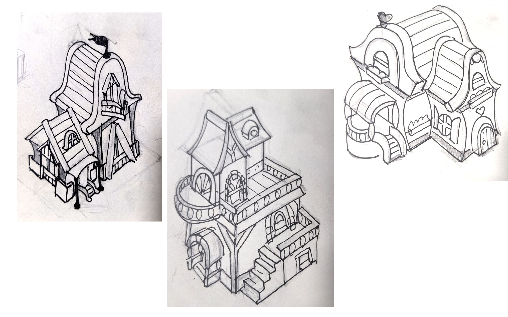
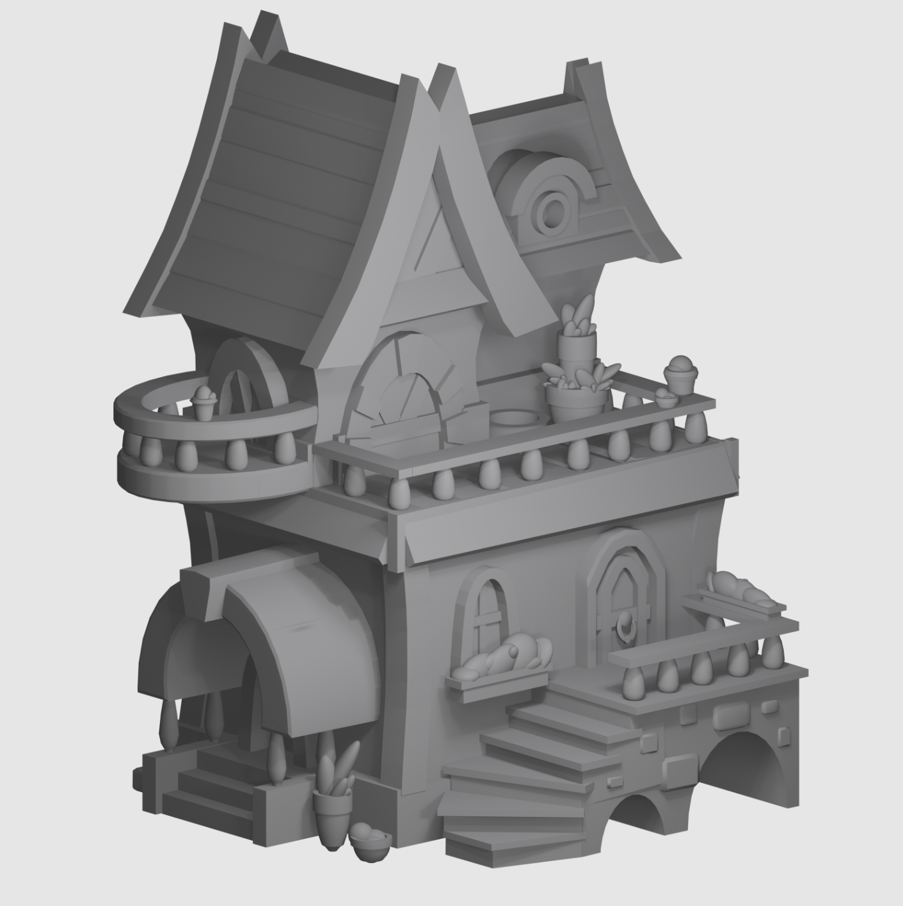
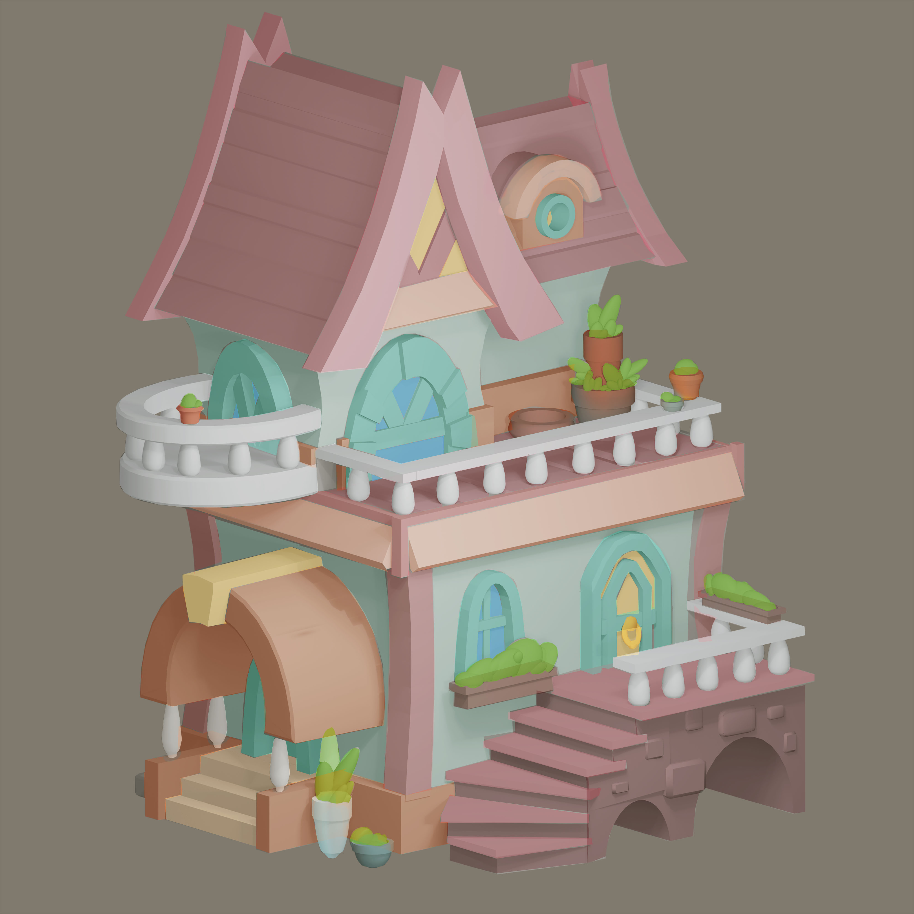
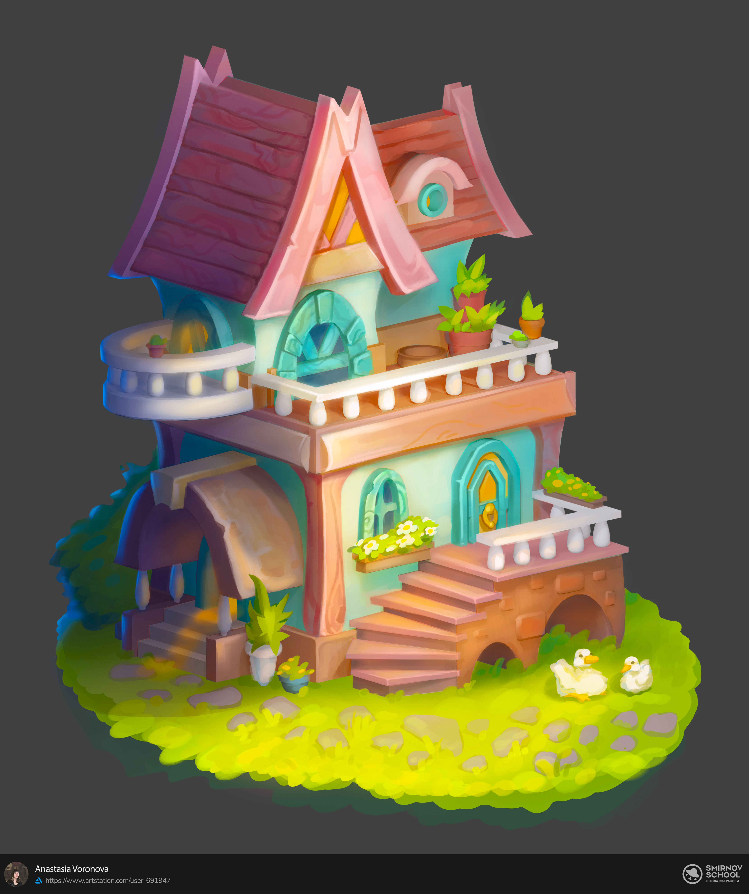

Как создаётся работа
Каждое изображение в портфолио проходит несколько этапов: от идеи и скетча до финальной обработки в Photoshop. Ниже показан процесс создания одной из работ.
Поиск идеи
Работа начинается с рисунка от руки. В дальнейшем набросок переносится в Blender, где создаётся базовая 3D-болванка — основа будущей модели.

Болванка в Blender
В Blender прорабатываются объём и детали (скульптинг), настраиваются источники света.

Задаем цвет в Photoshop
После того как мы сделали болванку в Blender и выставили свет, можно задать цвета. Делать это можно как в Blender, так и в Adobe Photoshop.В Photoshop задаётся основная цветовая гамма работы.

Финальная отрисовка в Photoshop
Рендер дорабатывается вручную: уточняются детали, добавляются текстуры, выполняется цветокоррекция и рендер материалов.
